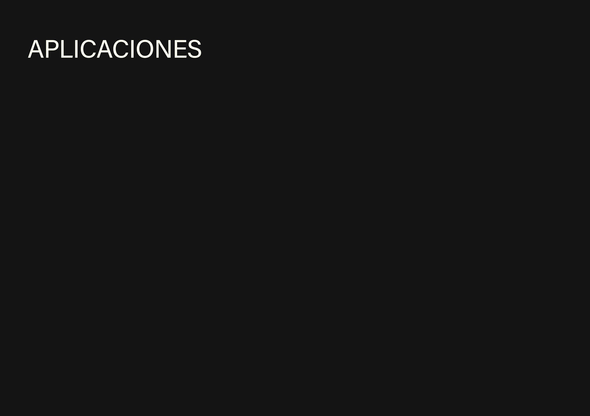
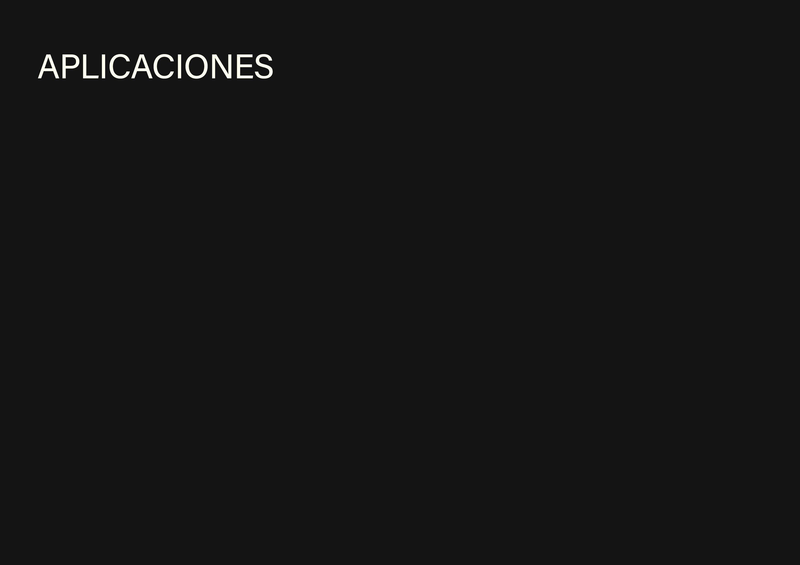
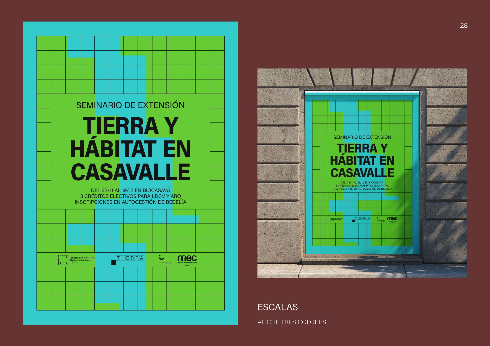
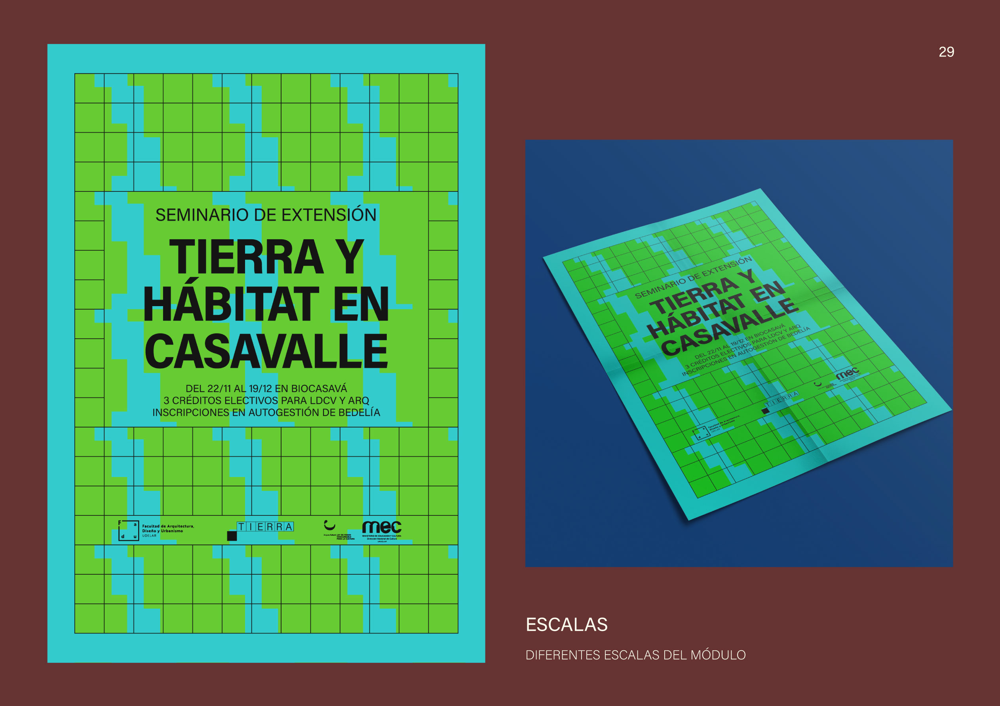
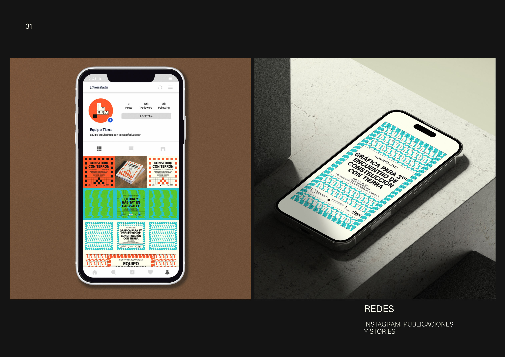
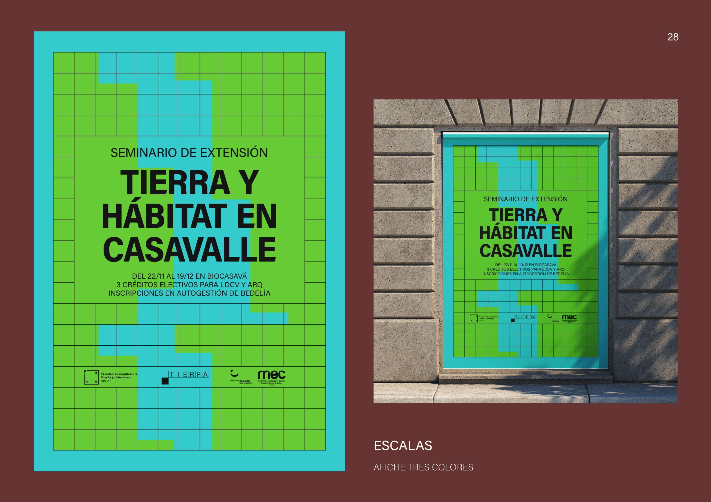
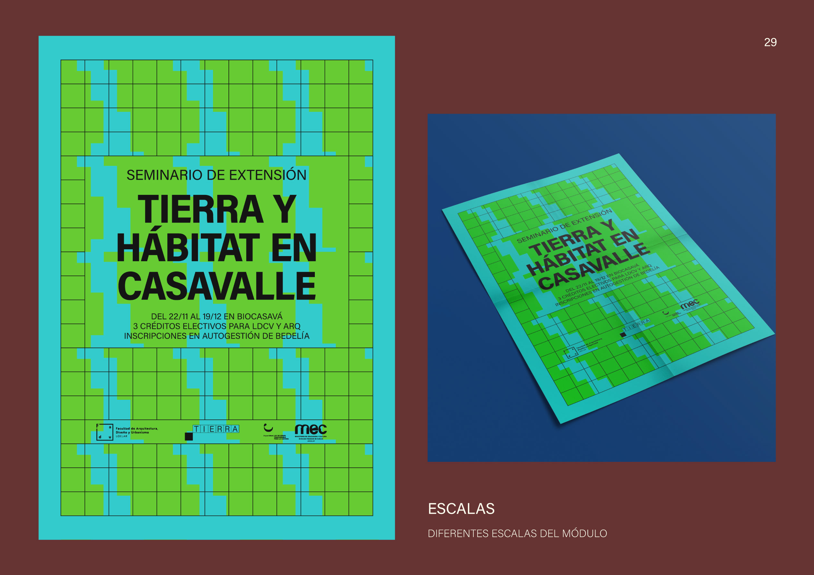
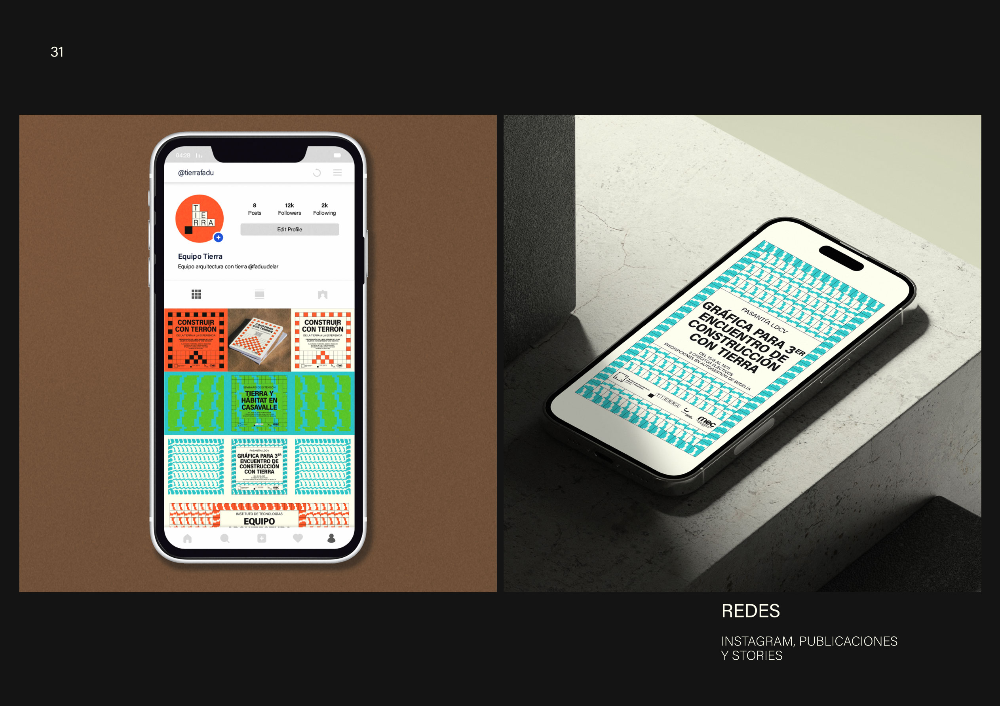

Equipo Tierra - FADU UdelaR
El Equipo Tierra es una organización académica que se encarga de la gestión, enseñanza, investigación y extensión de proyectos referentes a la arquitectura y construcción con tierra. Funciona dentro del Departamento de Materiales y Procedimientos, en el Instituto de Tecnologías de la Facultad de Arquitectura, Diseño y Urbanismo, Universidad de la República.
El enlace con la LDCV ocurre a través de la Pasantía Académica - Trabajo en conjunto equipo de Arquitectura con tierra del IT + LDCV, con el objetivo de lograr el Diseño de Identidad Visual para Equipo de Arquitectura con Tierra. Esta experiencia busca sistematizar la información generada para realizar la difusión pertinente a través de un material gráfico digital y/o editorial, mediante el desarrollo de la identidad visual del equipo de Arquitectura con Tierra del IT.


 



 







Podés ver la primer aplicación de este sistema en 3er Encuentro de Construcción con Tierra.